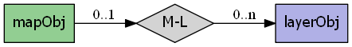
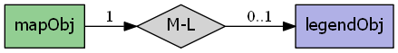
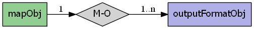
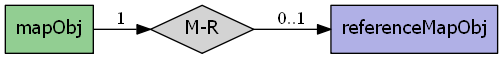
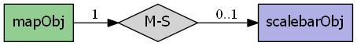

mapscript.mapObj¶
- class mapscript.mapObj(*args)¶
The MAP object
Overview
The mapObj has the following relationships:
    Attributes
cellsizedouble Pixel size in map units
configconfigObj const immutable TODO Add documentation
configoptionshashTableObjimmutable A hash table of configuration options from CONFIG keywords in the map - see CONFIGdatapatternchar TODO - Deprecated use VALIDATION .
debugint See DEBUG
defresolutiondouble Default resolution - used to calculate the scalefactor, see DEFRESOLUTION
extentfontsetfontSetObjimmutable See FONTSETheightint See SIZE
imagecolorcolorObjHolds the initial image color value - see IMAGECOLORimagetypechar immutable Name of current outputformat
labelcachelabelCacheObjimmutable We need this here so multiple feature processors can access itlayerorderint Used to modify the order in which the layers are drawn - TODO should be immutable?
legendmappathchar Path of the mapfile, all paths are relative to this path
maxlayersint immutable Allocated size of layers[] array
maxsizeint See MAXSIZE
namechar Small identifier for naming etc - see NAME
numlayersint immutable Number of layers in mapfile
numoutputformatsint immutable Number of output formats available in the map
outputformatoutputFormatObjimmutable See OUTPUTFORMATquerymapqueryMapObjimmutable See QUERYMAPrefcountint immutable Used for reference counting see RFC24
referencereferenceMapObjimmutable See SCALEBARresolutiondouble See RESOLUTION
scalebarscalebarObjimmutable See SCALEBARscaledenomdouble The nominal map scale, a value of 25000 means 1:25000 scale - see SCALEDENOM
shapepathchar Where are the shape files located - see SHAPEPATH
sldurlchar URL of SLD document as specified with "&SLD=..." WMS parameter d- currently this reference is used only in mapogcsld.c and has a NULL value outside that context
statusint Is map creation on or off - see STATUS
symbolsetsymbolSetObjimmutable See SYMBOLSETtemplatepatternchar TODO - Deprecated use VALIDATION .
thisownThe membership flag
unitsenum MS_UNITS Units of the projection - see UNITS
webwidthint See SIZE
Methods
- OWSDispatch(req: OWSRequest) int[source]¶
Processes and executes the passed OpenGIS Web Services request on the map. Returns
MS_DONE(2) if there is no valid OWS request in the req object,MS_SUCCESS(0) if an OWS request was successfully processed andMS_FAILURE(1) if an OWS request was not successfully processed. OWS requests include WMS, WFS, WCS and SOS requests supported by MapServer. Results of a dispatched request are written to stdout and can be captured using the msIO services (i.e.mapscript.msIO_installStdoutToBuffer()andmapscript.msIO_getStdoutBufferString()
- appendOutputFormat(format: outputFormatObj) int[source]¶
Attach format to the map’s output format list. Returns the updated number of output formats.
- applyDefaultSubstitutions() void[source]¶
Apply any default values defined in a VALIDATION block used for runtime substitutions
- applySLD(sld: char) int[source]¶
Parse the SLD XML string sldxml and apply to map layers. Returns
MS_SUCCESSorMS_FAILURE
- applySLDURL(sld: char) int[source]¶
Fetch SLD XML from the URL sldurl and apply to map layers. Returns
MS_SUCCESSorMS_FAILURE
- applySubstitutions(names: char) void[source]¶
Pass in runtime substitution keys and values and apply them to the map. Note - this method is currently enabled for Python only. Typemaps are needed for other MapScript languages.
- clone() mapObj[source]¶
Return an independent copy of the map, less any caches.
Note
In the Java & PHP modules this method is named
cloneMap.
- convertToString() char[source]¶
Saves the object to a string. Provides the inverse option for updateFromString.
- draw() imageObj[source]¶
Draw the map, processing layers according to their defined order and status. Return an
imageObj.
- drawLabelCache(image: imageObj) int[source]¶
Draw map’s label cache on image. Returns
MS_SUCCESSorMS_FAILURE.
- embedLegend(image: imageObj) int[source]¶
Embed map’s legend in image. Returns
MS_SUCCESSorMS_FAILURE.
- embedScalebar(image: imageObj) int[source]¶
Embed map’s legend in image. Returns
MS_SUCCESSorMS_FAILURE.
- freeQuery(qlayer: int = -1) void[source]¶
Clear layer query result caches. Default is -1, or all layers.
- generateSLD(sldVersion: char = None) char[source]¶
Return SLD XML as a string for map layers that have STATUS on.
- getConfigOption(key: char) char[source]¶
Fetches the value of the requested configuration key if set. Returns NULL if the key is not set.
- getLayerOrder() PyObject[source]¶
Python MapScript only - returns the map layer order as a native sequence
- getLayersDrawingOrder() intarray[source]¶
Returns an array of layer indexes in drawing order. Note Unless the proper typemap is implemented for the module’s language a user is more likely to get back an unusable SWIG pointer to the integer array.
- getOutputFormat(i: int) outputFormatObj[source]¶
Returns the output format at the specified i index from the output formats array or null if i is beyond the array bounds. The number of outpuFormats can be retrieved by calling
mapObj.getNumoutputformats().
- getOutputFormatByName(name: char) outputFormatObj[source]¶
Return the output format corresponding to driver name imagetype or to format name imagetype. This works exactly the same as the IMAGETYPE directive in a mapfile, is case insensitive and allows an output format to be found either by driver (like ‘AGG/PNG’) or name (like ‘png’).
- getSymbolByName(name: char) int[source]¶
Return the index of the named symbol in the map’s symbolset.
Note
This method is poorly named and too indirect. It is preferable to use the getSymbolByName method of
symbolSetObj, which really does return asymbolObjreference, or use the index method of symbolSetObj to get a symbol’s index number.
- loadMapContext(szFileName: char, useUniqueNames: int = 0) int[source]¶
Load an OGC map context file to define extents and layers of a map Returns
MS_SUCCESSorMS_FAILURE
- loadOWSParameters(*args) int[source]¶
Load OWS request parameters (BBOX, LAYERS, &c.) into map. Returns
MS_SUCCESSorMS_FAILURE
- loadQuery(filename: char) int[source]¶
Load a saved query. Returns
MS_SUCCESSorMS_FAILURE
- moveLayerDown(layerindex: int) int[source]¶
Move the layer at layerindex down in the drawing order array, meaning that it is drawn later. Returns
MS_SUCCESSorMS_FAILURE
- moveLayerUp(layerindex: int) int[source]¶
Move the layer at layerindex up in the drawing order array, meaning that it is drawn earlier. Returns
MS_SUCCESSorMS_FAILURE
- offsetExtent(x: double, y: double) int[source]¶
Offset the map extent based on the given distances in map coordinates. Returns
MS_SUCCESSorMS_FAILURE.
- prepareQuery() void[source]¶
TODO this function only calculates the scale or am I missing something?
- processLegendTemplate(names: char, values: char, numentries: int) char[source]¶
Process MapServer legend template and return HTML. Note none of the three template processing methods will be usable unless the proper typemaps are implemented in the module for the target language.Currently the typemaps are not implemented.
- processQueryTemplate(names: char, values: char, numentries: int) char[source]¶
Process MapServer query template and return HTML. Note none of the three template processing methods will be usable unless the proper typemaps are implemented in the module for the target language.Currently the typemaps are not implemented.
- processTemplate(bGenerateImages: int, names: char, values: char, numentries: int) char[source]¶
Process MapServer template and return HTML. Note none of the three template processing methods will be usable unless the proper typemaps are implemented in the module for the target language.Currently the typemaps are not implemented.
- queryByFeatures(slayer: int) int[source]¶
Query map layers, result sets contain features that intersect or are contained within the features in the result set of the
MS_LAYER_POLYGONtype layer at layer index slayer. ReturnsMS_SUCCESSorMS_FAILURE.
- queryByFilter(string: char) int[source]¶
Query map layers using the filter string. Returns
MS_SUCCESSorMS_FAILURE.
- queryByPoint(point: pointObj, mode: int, buffer: double) int[source]¶
Query map layers, result sets contain one or more features, depending on mode, that intersect point within a tolerance buffer. Returns
MS_SUCCESSorMS_FAILURE.
- queryByRect(rect: rectObj) int[source]¶
Query map layers, result sets contain features that intersect or are contained within the features in the result set of the
MS_LAYER_POLYGONtype layer at layer index slayer. ReturnsMS_SUCCESSorMS_FAILURE.
- queryByShape(shape: shapeObj) int[source]¶
Query layer based on a single shape, the shape has to be a polygon at this point. Returns
MS_SUCCESSif shapes were found orMS_FAILUREif nothing was found or if some other error happened
- removeOutputFormat(name: char) int[source]¶
Removes the format named name from the map’s output format list. Returns
MS_SUCCESSorMS_FAILURE
- save(filename: char) int[source]¶
Save map to disk as a new map file. Returns
MS_SUCCESSorMS_FAILURE
- saveMapContext(szFileName: char) int[source]¶
Save map definition to disk as OGC-compliant XML. Returns
MS_SUCCESSorMS_FAILURE
- saveQuery(filename: char, results: int = 0) int[source]¶
Save query to disk. Returns
MS_SUCCESSorMS_FAILURE
- saveQueryAsGML(*args) int[source]¶
Save query to disk. Returns
MS_SUCCESSorMS_FAILURE
- scaleExtent(zoomfactor: double, minscaledenom: double, maxscaledenom: double) int[source]¶
Scale the map extent using the zoomfactor and ensure the extent within the minscaledenom and maxscaledenom domain. If minscaledenom and/or maxscaledenom is 0 then the parameter is not taken into account. Returns
MS_SUCCESSorMS_FAILURE
- selectOutputFormat(imagetype: char) void[source]¶
Set the map’s active output format to the internal format named imagetype. Built-in formats are “PNG”, “PNG24”, “JPEG”, “GIF”, “GTIFF”.
- setCenter(center: pointObj) int[source]¶
Set the map center to the given map point. Returns
MS_SUCCESSorMS_FAILURE.
- setConfigOption(key: char, value: char) void[source]¶
Set the indicated key configuration option to the indicated value. Equivalent to including a CONFIG keyword in a map file.
- setExtent(minx: double, miny: double, maxx: double, maxy: double) int[source]¶
Set the map extent, returns
MS_SUCCESSorMS_FAILURE. This method will correct the extents (width/height ratio) before setting the minx, miny, maxx, maxy values. See extent properties to set up a custom extent fromrectObj.
- setFontSet(filename: char) int[source]¶
- . Load fonts defined in filename into map fontset. The existing fontset is cleared.
Returns
MS_SUCCESSorMS_FAILURE
- setImageType(imagetype: char) void[source]¶
Sets map outputformat to the named format.
Note
mapObj.setImageType()remains in the module but its use is deprecated in favor ofmapObj.selectOutputFormat().
- setLayerOrder(order: PyObject) int[source]¶
Python MapScript only - sets the map layer order using a native sequence
- setLayersDrawingOrder(panIndexes: int) int[source]¶
Set map layer drawing order. Note Unless the proper typemap is implemented for the module’s language users will not be able to pass arrays or lists to this method and it will be unusable.
- setOutputFormat(format: outputFormatObj) void[source]¶
Sets map outputformat.
- setRotation(rotation_angle: double) int[source]¶
Set map rotation angle. The map view rectangle (specified in EXTENTS) will be rotated by the indicated angle in the counter- clockwise direction. Note that this implies the rendered map will be rotated by the angle in the clockwise direction.
Returns
MS_SUCCESSorMS_FAILURE
- setSymbolSet(szFileName: char) int[source]¶
Load symbols defined in filename into map symbolset. The existing symbolset is cleared. Returns
MS_SUCCESSorMS_FAILURE
- zoomPoint(zoomfactor: int, poPixPos: pointObj, width: int, height: int, poGeorefExt: rectObj, poMaxGeorefExt: rectObj) int[source]¶
Zoom by the given factor to a pixel position within the width and height bounds. If max_extent is not NULL, the zoom is constrained to the max_extents
Returns
MS_SUCCESSorMS_FAILURE
- zoomRectangle(poPixRect: rectObj, width: int, height: int, poGeorefExt: rectObj, poMaxGeorefExt: rectObj) int[source]¶
Set the map extents to a given extents. Returns
MS_SUCCESSorMS_FAILUREon error